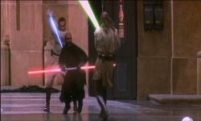
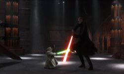
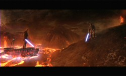
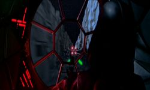
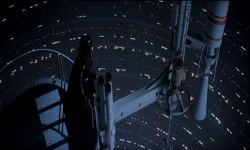
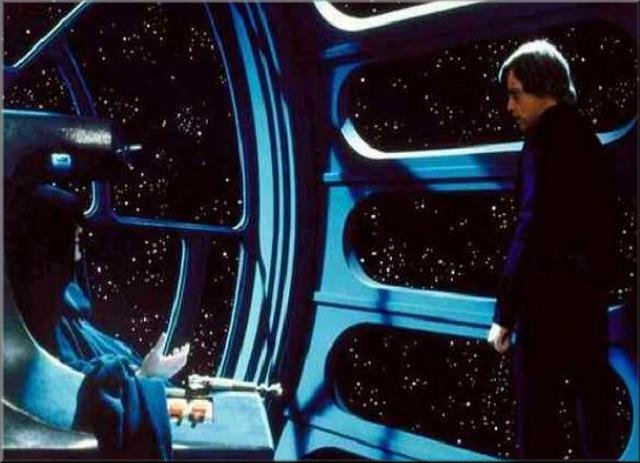

Star Wars Films
Episode I : The Phantom Menace
What it's about:
Jedi Master Qui-Gon Jinn and his Padawan, Obi-Wan Kenobi, rescue Queen Amidala of the Naboo from a blockade by the Trade Federation. On the way back to Coruscant they meet up with a slave boy Anakin Skywalker on Tatooine, who frees himself from slavery and joins the Jedi on their journey. The Queen travels back to Naboo where, with the help of the Jedi, Anakin and the Gungan army, she ends the blockade and restores peace to Naboo. During the battle Qui-Gon was killed by the Sith Apprentice, Darth Maul who in turn was killed by Obi-Wan.
What I think:
The Phantom Menace is a great introduction to the whole Star Wars universe. Even though it mightn't be the strongest of all the movies it was always going to be the most scrutinised movie of the lot so it could hardly meet everyone's expectations. Although a lot of people were disappointed with it I have to say that I enjoyed it immensely and it has already gone into my mind as a classic Star Wars movie.
Favourite scene:
Has to be the duel between Qui-Gon, Obi-wan and Darth Maul. That's some serious lightsaber fighting.
Versions Owned:
Original release VHS 1999. Pan & Scan.
Original release DVD 2001. Wide Screen. Feature Commentary and Bonus Disk.

Episode II : Attack of the Clones
What it's about:
Obi-Wan Kenobi and Anakin Skywalker investigate the attempts on the life of Senator Padmé Amidala. The investigation leads Obi-Wan to the planet Kamino, on the trail of the bounty hunter Jango Fett, where a clone army is being created for the Republic. He then travels to Geonosis where he is captured by Count Dooku. Anakin, after the death of his mother on Tatooine, follows Padmé to Geonosis to rescue Obi-Wan but are soon captured themselves. It takes the Jedi and the Clone Army to finally rescue the three but not before starting The Clone Wars.
What I think:
Because I never have the time this is the least watched of all the movies, although I did go and see it six times in the cinema which makes up for it. It's not because I didn't like it either I think it's great. I love so much about it and there is definitely a better structure to it than The Phantom Menace and it is similar to the originals which is a plus.
Favourite scene:
The Yoda/Dooku fight scene plastered a huge smile on my face so it has to be that.
Versions Owned:
Original release VHS 2002. Pan & Scan. "Star Wars Connections" feature, Six Deleted Scenes.
Original release DVD 2002. Wide Screen. Feature Commentary and Bonus Disk.

Episode III : Revenge of the Sith
What it's about:
Anakin Skywalker, fearing for Padmé's life and the life of their child, turns to the Sith Lord Palpatine to prevent her from dying. Meanwhile Obi-Wan Kenobi is on the trail of Separatist leader General Grievous, if he destroys him then the Clone Wars will end and peace will be restored to the galaxy. When the Jedi learn that Palpatine is a Sith they attempt to arrest him only to be thwarted by Anakin. Anakin then falls to the dark side and is confronted by Obi-Wan. during the fight Anakin is severely burned and is left for dead only to be revived by Palpatine. The Jedi are hunted down and Padmé dies during childbirth. The twins are taken into hiding while Darth Vader is born.
What I think:
This is Star Wars back to its best. Not only is there action, humour and excitement, there is a great darkness about the whole film culminating in the downfall of Anakin. Plus what a fantastic lightsaber duel between former friends. Top class.
Favourite scene:
Apart from the action scenes, of which there are many, my favourite scene is the one where Obi-Wan and Anakin talk as friends for the final time. You know from that point on they can only be enemies.
Versions Owned:
N/A

Episode IV : A New Hope
What it's about:
Princess Leia is captured by the evil Darth Vader after receiving stolen plans for the Empire's Death Star. The droid duo, R2-D2 and C-3P0, are sent to find Obi-Wan Kenobi and give him the plans. With the help of farm-boy Luke Skywalker and Captain Han Solo, Obi-Wan travels to Alderaan with the plans. They too are captured and Luke, Han and Chewbacca attempt to rescue Princess Leia. Although Obi-Wan is killed by Darth Vader, they escape with the plans and begin an assault on the Death Star. Using the Force, Luke manages to destroy the battle station and save the Rebellion.
What I think:
This is where it all started in 1977 and even today it can still bring chills down peoples spines. The first time I saw this movie was in 1995 when I got the THX mastered version, even then it got me excited about a movie like never before or since. The special editions only enhance the viewing pleasure of this movie.
Favourite scene:
I think it would have to be the end battle over the Death Star although the Obi-Wan Vader duel is a close second.
Versions Owned:
Original release VHS 1995. THX mastered, Pan & Scan. Special George Lucas interview, Part I.
Special Edition release VHS 1997. Pan & Scan. Making of: "Star Wars Special Edition".
Star Wars Trilogy release DVD 2004. Wide Screen. Special Commentary and Bonus Material disk.

Episode V : The Empire Strikes Back
What it's about:
Hiding on the ice planet Hoth, the rebels are soon found by Darth Vader. After a fierce battle Han Solo and Princess Leia travel to Bespin's Cloud City where they meet up with Han's old friend Lando Calrissian. Meanwhile Luke Skywalker travels to Dagobah to meet up with the Jedi Master Yoda. Han and Leia are captured by Darth Vader and Boba Fett on Cloud City where Han is placed in carbonite. Luke rushes to rescue his friends only to be led into a trap set by Vader. After duelling with Vader he comes to realise his true heritage: Darth Vader is his Father!
What I think:
A rare sequel that equals or surpasses the original. It's darker, has a cool (literally) battle at the start, new locales in Bespin and Dagobah, more Vader being evil, bounty hunters and all leading up to the big revelation at the end. Probably my favourite if I was pushed to choose.
Favourite scene:
The duel between Luke and Vader. It shows Vader's power and Luke's inexperience which makes the Duel in Return of the Jedi that much better.
Versions Owned:
Original release VHS 1995. THX mastered, Pan & Scan. Special George Lucas interview, Part II.
Special Edition release VHS 1997. Pan & Scan. Making of: "The Empire Strikes Back Special Edition".
Star Wars Trilogy release DVD 2004. Wide Screen. Special Commentary and Bonus Material disk.

Episode VI : Return of the Jedi
What it's about:
After rescuing Han Solo from the gangster Jabba the Hutt, killing Boba Fett and Jabba in the process, the rebels travel to Endor where the Empire has created a new Death Star. Princess Leia and Han, along with the Ewoks, knock down the energy shield on the planet while Luke Skywalker confronts Darth Vader and the Emperor. After Luke and Vader duel the Emperor tries to turn Luke to the Dark Side but he resists. The Emperor then tries to kill Luke only to be rescued by Vader, killing his master and turning himself from the Dark Side. The rebels then destroy the Death Star and restore peace and order to the galaxy.
What I think:
Return of the Jedi is the perfect way to finish off the saga. It ties off all the loose ends while having a compelling story as well. The action sequences are some of the best in the original trilogy and the Jabba sequence is a cool aside. It also has the Emperor in it which is a really great scene with Luke and Vader.
Favourite scene:
The Emperor/Luke/Vader scene on the Death Star. It has a great lightsaber duel as well as the redemption of Anakin Skywalker.
Versions Owned:
Original release VHS 1995. THX mastered, Pan & Scan. Special George Lucas interview, Part III.
Special Edition release VHS 1997. Pan & Scan. Making of: "Return of the Jedi Special Edition".
Star Wars Trilogy release DVD 2004. Wide Screen. Special Commentary and Bonus Material disk.
